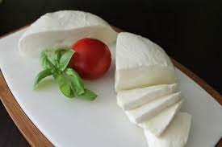
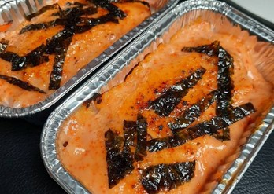

ABSTRACT
The bazaar established on the 5th of December, was based on the concept of racing. Race To Rave is a small business retailed for the project of Saint Ursula Junior High School, which sells various things including food, products, and drinks. Mozzarella cheese is one of the most loved cheeses in this generation. This type of cheese is used in one of our foods, cheese cubes. Considering the range price always above Rp 30.000,-, we decided to make mozzarella cheese as our main project in Science, focusing on Biology. Unlike supermarket-bought mozzarella, freshly made ones are usually cheaper in material, yet complicated in the process. Leveraging the field of socials, the whole team has made a report for our financial stability after the bazaar. Besides that, the social and math field also required the report and statistics of our products. The research methods we used in this biotechnology process are laboratory experiments; which include observations and measurements of the ingredients, statistical analysis; including the statistics we made for our final report, market research, and trend analysis; which involves the consideration of trends in mozzarella cheese to attract customers.
Bazaar yang didirikan pada tanggal 5 Desember ini mengusung konsep racing. Race To Rave adalah usaha kecil yang dibuat untuk proyek Sekolah SMP Santa Ursula Jakarta, yang menjual berbagai macam barang termasuk makanan, produk dan minuman. Keju mozarella merupakan salah satu keju yang paling digandrungi pada generasi ini. Keju jenis ini digunakan pada salah satu makanan kita, yaitu cheese cubes. Mengingat kisaran harga yang selalu diatas Rp 30.000,-, kami memutuskan untuk menjadikan keju mozzarella sebagai proyek utama kami di bidang Sains dengan fokus pada sektor Biologi. Berbeda dengan mozarella yang dibeli di supermarket, mozzarella segar biasanya lebih murah bahannya, namun prosesnya rumit. Memanfaatkan bidang sosial, seluruh tim sudah membuat laporan untuk stabilitas keuangan kami setelah bazar. Selain itu, bidang sosial dan matematika juga membutuhkan laporan dan statistik produk kami. Metode penelitian yang kami gunakan pada proses bioteknologi ini adalah eksperimen laboratorium; yang meliputi observasi dan pengukuran bahan, analisis statistik; termasuk statistik yang kami buat untuk laporan akhir, riset pasar, dan analisis tren; melibatkan pertimbangan tren keju mozzarella untuk menarik pelanggan.
PROCEDURE TEXT
Making Mozzarella Cheese from Scratch
First, the fresh milk was heated on the stove and was stirred gently. The temperature was checked with a thermometer until it's 65˚C. The heat was turned off, and the pot was covered, letting it cool for about 40 minutes until it's 35˚C. While waiting, citric acid was mixed with water in one bowl and rennet with water in another. When the milk cools down, these mixtures are poured in and stirred well. The pot was covered again, and another 40 minutes were waited for. Once the time is up, the curd is cut into chunks, it's heated a bit, and the extra liquid is strained out. Some salt is added to the curd, and then it's dipped into boiling water until it becomes stretchy like rubber. Your mozzarella cheese is put into a container and stored in the fridge. Now you have your homemade mozzarella cheese ready to enjoy with anything.
Salmon and Crab Stick bowl
To prepare the Salmon and Crab Stick Rice Bowl, begin by thinly slicing the salmon filet and placing it in a bowl, where it is marinated with a suitable amount of salt and pepper for approximately 15 minutes. Next, the crabstick is boiled in a pot of heated water until it reaches the desired softness. In a separate bowl, a mixture of Japanese mayonnaise, sambal sauce, soy sauce, a pinch of sugar and salt, along with crushed seaweed, is prepared and combined thoroughly. After cooling down, the crabstick is shredded lengthwise. Cooked rice is then transferred into a bowl, where it is mixed with sesame oil and crushed seaweed. Once the salmon has been marinated for about 15 minutes, it is grilled on a non-stick pan over medium heat until it achieves a halfway cooked texture using butter, ensuring perfect cooking upon torching. Subsequently, the salmon is shredded using a fork until it reaches a coarse texture, then combined with the shredded crab stick in a bowl. The rice is placed in an aluminum foil box, where the salmon and crab stick mixture is neatly arranged on top before being drizzled with mentai sauce. This process is repeated until the desired quantity is reached, and finally, a torch is used to evenly torch the top of the mentai sauce until it is thoroughly cooked. Now, the delectable Salmon and Crab Stick Rice Bowl is ready to be savored!
Spotify Playlist!
Ngejam sama Race to Rave yuk!
Gallery :